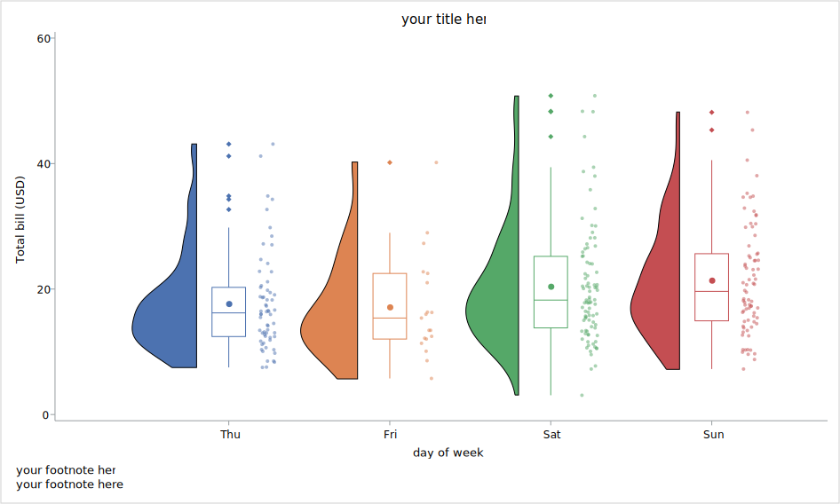
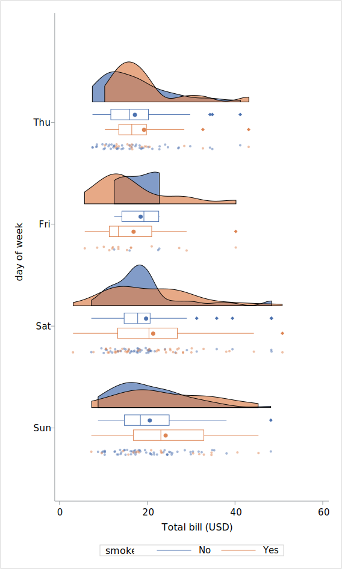
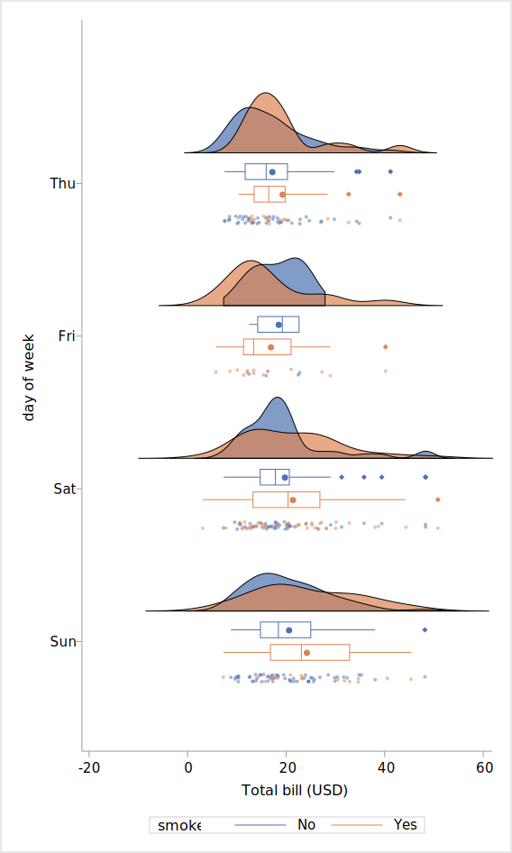
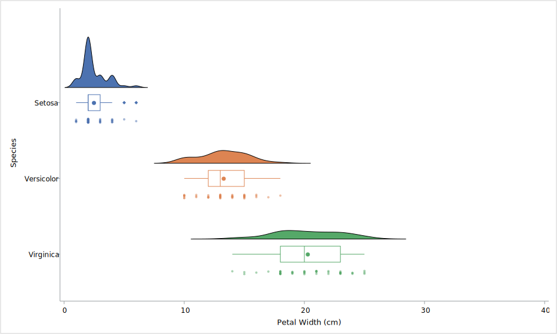

Raincloud plot
What’s this?
Macro for generate raincloud plot using SAS GRAPH.
Raincloud plot is contained density plot (half-violin plot) , box plot and strip plot. 1
density plot displays distribution estimated by KDE (kernel density estimation) of input data.
box plot displays descriptive statistics (mean, q1, q2, q3 outlier).
strip plot is jittered scatterplot and displays individual data.
Input data
key |
variable |
type |
1 |
category |
numeric or string |
2 |
group |
numeric or string |
response |
numeric |
group variable is optional.
I recommended that the variable type of category and group are set to numeric with format. if the variable type is string, item order is defined as ascending character order.
Syntax
ods graphics / < graphics option > ; ods listing gpath=< output path >; %RainCloud( data=, x=, y=, group=None, yticks=, xlabel=x, ylabel=y, cat_iv=2.5, element_iv=0.02, scale=area, trim=True, connect=false, gridsize=401, bw_method=sjpi, bw_adjust=1, orient=v, legend=false, legendtitle=#, jitterwidth=0.1, outlinewidth=1, palette=sns, note=, deletedata=True);
Parameters
data : dataset name (required)
input data. keep, rename and where options are available.
x : variable name (required)
category variable
y : variable name (required)
response variable
group : variable name (optional)
group variable for grouping data at each category.
when the parameter is not set, all of graph object is set same color.
when the parameter is set category variable, the graph object of each category is set different color.
default is “None”.
xlabel : string (optional)
label string of category axis. default is “x”. when the label is not displayed , set like below.
xlabel=,
ylabel : string (optional)
optional. label string of response axis. default is “y”. when the label is not displayed , set like below.
ylabel=,
yticks : numeric list (required)
tickvalue list of response axis. the list is set as the numeric list separated by space . the item of the list should be set ascending order.
ex. yticks = 10 20 30 40,
cat_iv : numeric (optional)
the interval of category. the default is 2.5.
element_iv : numeric (optional)
the interval of density plot, boxplot and strip plot. the default is 0.02.
scale: area or width (optional)
The method used to scale the width of each density plot.
If area, each plot will have the same area. If width, each plot will have the same width.
when the density plots are far different each other, width keyword may be useful. the default is “area”.
trim: bool (optional)
if True the density outside of observed data range will be trimmed. the default is “True”.
If area, each plot will have the same area. If width, each plot will have the same width.
when the density plots are far different each other, width keyword may be useful.
connect: bool (optional)
if True the mean values in same group are connected by solid line. the default is “False”.
gridsize : integer (optional)
the number of KDE grid size. default is 401 (the default of proc kde)
bw_method : keyword (optional)
the bandwidth estimation method of KDE. default is “sjpi” (the default of proc kde).
method keyword described below is available.
sjpi (Sheather-Jones plug-in)
snr (simple normal reference)
snrq (simple normal reference that uses the interquartile range)
srot (Silverman’s rule of thumb)
os (oversmoothed)
bw_adjust : numeric (optional)
the bandwidth multiplier. Increasing will make the curve smoother.
the default is 1.
legend : bool (optional)
if “True”, legend of group item is displayed. if group parameter is “None”, the parameter will be ignored.
default is “False”.
legendtitle : text (optional)
the title of legend. default is label of group variable.
orient : v or h (optional)
Orientation of the plot (vertical or horizontal).
the default is “v”.
jitterwidth : numeric(between 0 and 1) (optional)
jitter width of strip plot. Increasing this parameter may be made the data point overlapped on boxplot.
the default is “0.05”.
outlinewidth : numeric (optional)
outline width of density plot and boxplot.
the default is “1”.
palette : keyword (optional)
color palette for fill, line and markers. the palettes described below is available. see color palette section of introduction page. default is “SNS” (Seaborn default palette).
SAS
SNS (Seaborn)
STATA
TABLEAU
note : statement (optional)
insert the text entry statement into the graph template and display the title or footnote in the output image. default is “” (not displayed)
- deletedata : bool (optional)
if True, the temporary datasets and catalogs generated by macros will be deleted at the end of execution. default is True.
example
output example can be executed using following code after loading SAS plotter.
code
ods listing gpath="your output path";
filename exam url "https://github.com/Superman-jp/SAS_Plotter/raw/main/example/raincloud_example.sas" encoding='UTF-8';
%include exam;
Simple raincloud plot
raw data
filename raw url "https://raw.githubusercontent.com/mwaskom/seaborn-data/master/tips.csv";
PROC IMPORT OUT= WORK.raw
DATAFILE= raw
DBMS=CSV REPLACE;
GETNAMES=YES;
DATAROW=2;
guessingrows=max;
RUN;
proc format;
value dayf
1="Mon"
2="Tue"
3="Wed"
4="Thu"
5="Fri"
6="Sat"
7="Sun"
;
run;
data tips;
set raw(rename=(day=day_old));
format day dayf.;
label total_bill="Total bill (USD)"
day="day of week";
select (day_old);
when ("Thur") day=4;
when ("Fri") day=5;
when("Sat") day=6;
when("Sun") day=7;
otherwise put "WAR" "NING: irregular string" day_old;
end;
drop day_old;
run;
code
title "simple vertical raincloud plot";
ods graphics /reset=all height=15cm width=25cm imagename="rain_simple" imagefmt=png;
%RainCloud(data=tips,
x=day,
y=total_bill,
cat_iv=2.5,
element_iv=0.5,
group=day,
yticks=0 20 40 60,
bw_method=srot,
note=%nrstr(entrytitle 'your title here';
entryfootnote halign=left 'your footnote here';
entryfootnote halign=left 'your footnote here 2';)
);
output
when orient parameter is set “h”, the orientation of plot is changed horizontal (x=response, y=category)
code
title "simple horizontal raincloud plot";
ods graphics /reset=all height=25cm width=15cm imagename="rain_simple_h" imagefmt=png;
%RainCloud(data=tips,
x=day,
y=total_bill,
cat_iv=2.5,
element_iv=0.5,
group=day,
yticks=0 20 40 60,
orient=h,
bw_method=srot,
note=%nrstr(entrytitle 'your title here';
entryfootnote halign=left 'your footnote here';
entryfootnote halign=left 'your footnote here 2';)
);
Grouped raincloud plot
when group parameter is group variable, the kde estimation is performed every x variable and group variable. legend title will be displayed as label of group variable.
code
title "grouped raincloud plot";
ods graphics /reset=all height=25cm width=15cm imagename="rain_grouped" imagefmt=png;
%RainCloud(data=tips,
x=day,
y=total_bill,
group=smoker,
cat_iv=2.5,
element_iv=0.5,
yticks=%str(0 20 40 60),
bw_method=srot,
orient=h,
legend=True
);
output
when connect parameter is set “True”, mean of each group is connected.
code
ods graphics /reset=all height=15cm width=25cm imagename="rain_grouped_connect" imagefmt=png;
%RainCloud(data=tips,
x=day,
y=total_bill,
group=smoker,
cat_iv=2.5,
element_iv=0.5,
yticks=%str(0 20 40 60),
bw_method=srot,
orient=v,
connect=true,
legend=True
);
Trim parameter
if Trim parameter is set “False”, the density plot is displayed at all range. but the density outside of observed data range may be ambiguous.
code
title "raincloud plot with trim parameter";
ods graphics /reset=all height=25cm width=15cm imagename="rain_trim" imagefmt=png;
%RainCloud(data=tips,
x=day,
y=total_bill,
group=smoker,
cat_iv=2.5,
element_iv=0.5,
yticks=-20 0 20 40 60,
bw_method=srot,
trim=false,
orient=h,
legend=True
);
output
Scale parameter
if scale parameter is set “area”, all areas under density plot is same. In below example, the density plot of the “vesicolor” and “Verginica” is broad so density peak is displayed small.
code
title "raincloud plot with scale parameter (area)";
ods graphics /reset=all height=15cm width=25cm imagename="rain_area" imagefmt=png;
%RainCloud(data=sashelp.iris,
x=species,
y=petalwidth,
group=species,
xlabel=Species,
ylabel=Petal Width (cm),
yticks=0 10 20 30 40,
cat_iv=1.5,
orient=h,
element_iv=0.3,
trim=false,
scale=area,
bw_method=srot
);
output
if scale parameter is set “width”, width od all density plot is same. the density plot of the “vesicolor” and “Verginica” is magnified. it is easy to see density peak.
note: density plot is “non-quantitative”. and density plots using “width” keyword can’t be performed relative comparison.
code
title "raincloud plot with scale parameter (width)";
ods graphics /reset=all height=15cm width=25cm imagename="rain_width" imagefmt=png;
%RainCloud(data=sashelp.iris,
x=species,
y=petalwidth,
group=species,
xlabel=Species,
ylabel=Petal Width (cm),
yticks=0 10 20 30 40,
cat_iv=1.5,
orient=h,
element_iv=0.3,
trim=false,
scale=width,
bw_method=srot
);
Reference
- 1
Micah Allen, Davide Poggiali, Kirstie Whitaker, Tom Rhys Marshall, Jordy van Langen, and Rogier A Kievit. Raincloud plots: a multi-platform tool for robust data visualization, version 2. Wellcome open research, 2021. URL: https://www.ncbi.nlm.nih.gov/pmc/articles/PMC6480976/.